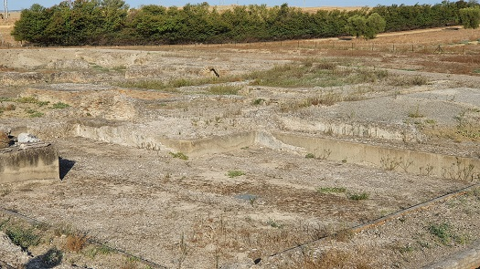

|
TERMAS MAYORES Los baños públicos, ocupan
una manzana escavada en parte y se conocían como los baños de la Reina Mora.
 Al sur del cuerpo principal se extendería la palestra que ocuparía casi la mitad de la edificación. A las termas se accedía por la zona este a través de una escalinata que daba paso al vestíbulo. Tras este se halla la piscina con forma de T, con las paredes y suelos revestidos de mármol blanco. A continuación se accede al resto de las habitaciones del baño y en torno a esta se hallan las habitaciones de servicio y las dependencias. Al final del eje de la entrada se halla el caldarium. El edificio a sido muy expoliado pero conserva los pilares de ladrillo para la calefacción. Ver Termas romanas
|
| CIUDADES DE HISPANIA | HISPANIA |